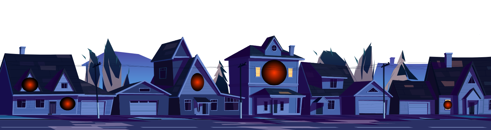
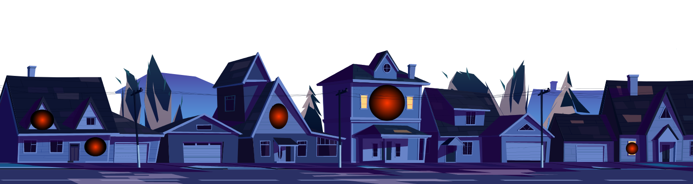
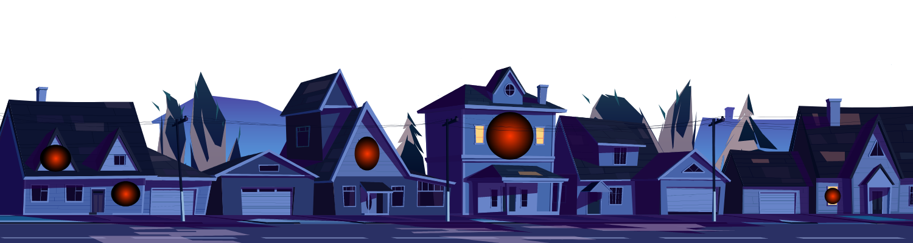
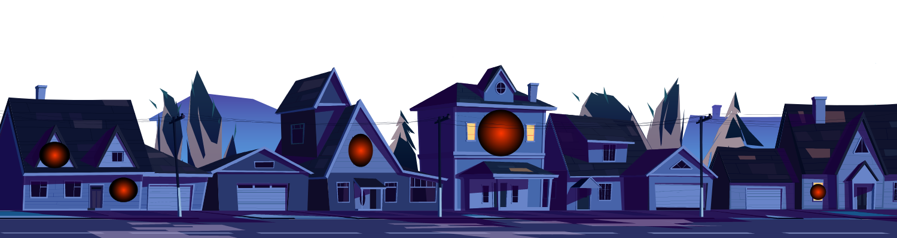

Free Education For All
 



This website was developed as an action to achieve Goal 4 (Quality Education) of Sustainable Development Goals by UN.
In September 2015, the General Assembly adopted the 2030 Agenda for Sustainable
 Development that includes 17 Sustainable Development Goals (SDGs).
Building on the principle of "leaving no one behind", the new Agenda emphasizes a holistic approach to achieving sustainable development for all.
The Sustainable Development Goals are the blueprint to achieve a better and more sustainable future for all. They address the global challenges we face, including poverty, inequality, climate change, environmental degradation, peace and justice. Learn more here.
Development that includes 17 Sustainable Development Goals (SDGs).
Building on the principle of "leaving no one behind", the new Agenda emphasizes a holistic approach to achieving sustainable development for all.
The Sustainable Development Goals are the blueprint to achieve a better and more sustainable future for all. They address the global challenges we face, including poverty, inequality, climate change, environmental degradation, peace and justice. Learn more here.
What is the goal here?
To ensure inclusive and quality education for all and promote lifelong learning.
Why does education matter?
Education enables upward socioeconomic mobility and is a key to escaping poverty.
Education helps reduce inequalities and reach gender equality and is crucial to fostering tolerance and more peaceful societies.
Over the past decade, major progress has been made towards increasing access to education and school enrollment rates at all levels, particularly for girls. Nevertheless, about 258 million children and youth were still out of school in 2018 — nearly one fifth of the global population in that age group.
As the COVID-19 pandemic spread across the globe, countries announced the temporary closure of schools, impacting more than 91 per cent of students worldwide. By April 2020, close to 1.6 billion children and youth were out of school.
 Where are people struggling the most to have access to education?
Where are people struggling the most to have access to education?
Sub-Saharan Africa faces the biggest challenges in providing schools with basic resources. The situation is extreme at the primary and lower secondary levels, where less than one half of schools in sub-Saharan Africa have access to drinking water, electricity, computers and the Internet.
Inequalities will also worsen unless the digital divide – the gap between under-connected and highly digitalized countries – is not addressed.
How much progress have we made so far?
The primary school completion rate reached 84 per cent in 2018, up from 70 per cent in 2000 and under current trends, is expected to reach 89 per cent globally by 2030.
In 74 countries with comparable data for the period 2011-2019, around seven in ten children aged three and four were developmentally on track in at least three of the following domains: literacy-numeracy, physical development, social-emotional development and learning.
The global adult literacy rate (aged 15 years and older) was 86 per cent in 2018, while the youth literacy rate (15 to 24 years) was 92 per cent.
What challenges remain?
Despite years of steady growth in enrolment rates, non-proficiency rates remain disturbingly high. In 2018, some 773 million adults—two-thirds of whom are women—remained illiterate in terms of reading and writing skills. And the sheer magnitude of school closures due to COVID-19 is likely to set back progress on access to education.
Are there groups that have a more difficult access to education?
Yes, women and girls are one of these groups. About one-third of countries in the developing regions have not achieved gender parity in primary education.
These disadvantages in education also translate into lack of access to skills and limited opportunities in the labour market for young women.
What can we do?
Ask our governments to place education as a priority in both policy and practice. Lobby our governments to make firm commitments to provide free primary school education to all, including vulnerable or marginalized groups.
To find out more about Goal #4 and other Sustainable Development Goals, visit:
http://www.un.org/sustainabledevelopment